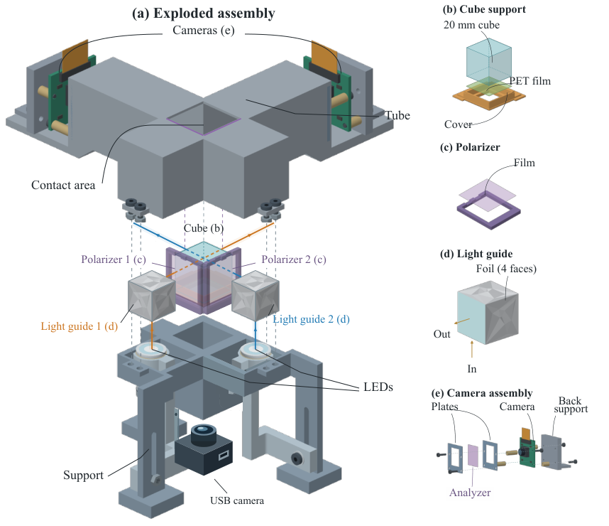

Optical tactile sensing
FringeTact
I built a sensor around a transparent elastomer cube. Two cameras record the colored fringes that appear under load, and a third camera looks up at the contact area.

Sensor and simulation
The cube measures 20 mm on each side. I paired finite-element stress simulations with polarized-light rendering to generate images with known pressure and shear distributions.
I used the fringe images to train a model to distinguish normal from shear loading and estimate the magnitude of the force.